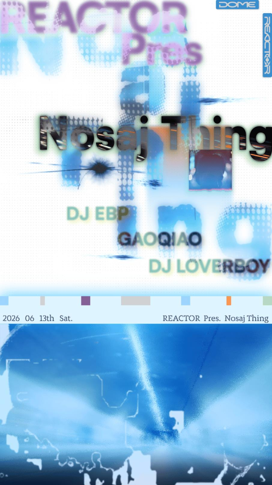

past / High
REACTOR pres. Nosaj Thing
C-Park electronic pick with DJ LOVERBOY, DJ EBP, Nosaj Thing, and GaoQiao. Not techno, but a credible experimental late-night option.

DateJun 13
Time22:00-05:00
VenueReactor Shanghai
DistrictChangning
Soundexperimental, future beats, hip-hop
Price148 RMB
Age / ID18+
Source layersecondary
Intensityhard
Credibilitysolid
Event Tags
Simple tags for sound, room context, ticket/source status, and details that still need a source check.
How We Recommend This
- RecommendationRecommended because the lineup (DJ LOVERBOY, DJ EBP, and 2 more listed artists) gives the night a clear bass, breaks, 140, or UKG draw at Reactor Shanghai.
- Best forBest for readers tracking bass, breaks, and high-energy club-adjacent rooms.
- Verify before goingRecheck the source link before going for ticket availability, final set times, address, age rules, and door policy.
- Source confidenceSingle public source from Resident Advisor; sufficient for archive visibility but still worth rechecking for live planning.
Lineup and Notes
- DJ LOVERBOYRA lists DJ LOVERBOY from 22:00 to 23:30.
- DJ EBPRA-linked artist listed from 23:30 to 01:00.
- Nosaj ThingRA frames Nosaj Thing through the Los Angeles beat scene, atmospheric electronic music, experimental beats, lo-fi hip-hop, and future beats.
- GaoQiaoRA-linked closing artist listed from 03:00 to 05:00.
Source Trail
- Resident Advisor secondary / checked 2026-06-11
Trust Ledger
- Last checked2026-06-11
- Selection basisIncluded for source visibility, room fit, and these editorial signals: techno-adjacent, high intensity, listening/live angle.
- Commercial relationshipNo paid placement recorded.
- Correction routeSend source fixes through RED 980793145 or the corrections policy.
- PolicyHow We Recommend / Corrections